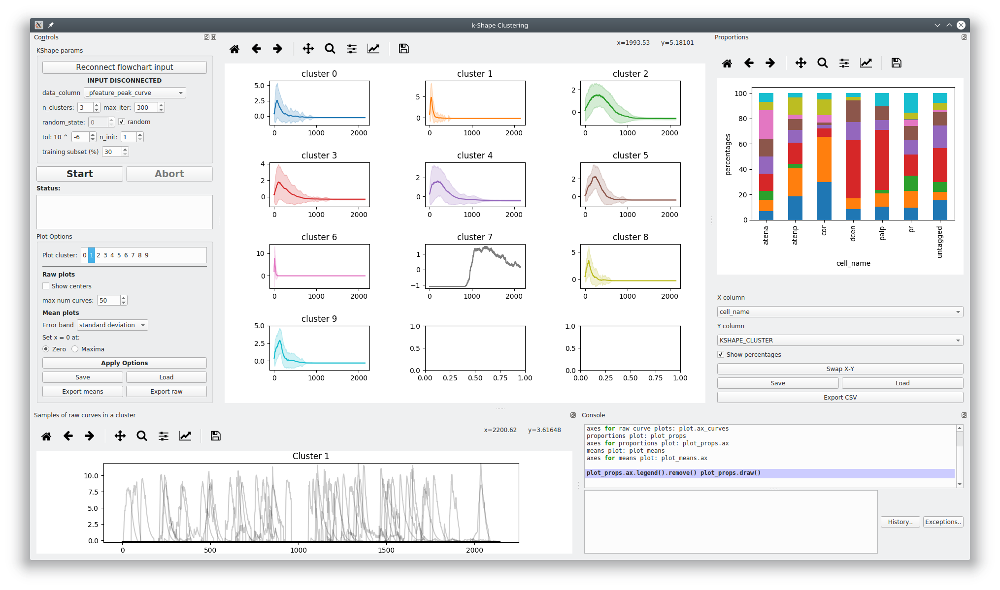

KShape¶
Perform KShape clustering.
I recommend reading the paper on it: Paparrizos, John, and Luis Gravano. “k-Shape: Efficient and Accurate Clustering of Time Series.” In Proceedings of the 2015 ACM SIGMOD International Conference on Management of Data, pp. 1855-1870. ACM, 2015.
This GUI uses the tslearn.clustering.KShape implementation.
See also
Note
This plot can be saved in an interactive form, see Saving plots
Layout
{kind=link}
Left: KShape parameters and Plot parameters
Bottom left: Plot of a random sample of input data from a cluster.
Center: Plot of cluster mean and either confidence interval, standard deviation, or neither. Uses on seaborn.lineplot
Right: Proportions plot. Exactly the same as Proportions.
Bottom Right: Console
KShape Parameters¶
The parameters and input data are simply fed to tslearn.clustering.KShape
Parameters outlined here are simply as they appear in the tslearn.
data_column: Input data for clustering.
n_clusters: Number of clusters to form.
max_iter: Maximum number of iterations of the k-Shape algorithm.
tol: Inertia variation threshold. If at some point, inertia varies less than this threshold between two consecutive iterations, the model is considered to have converged and the algorithm stops.
n_init: Number of times the k-Shape algorithm will be run with different centroid seeds. The final results will be the best output of n_init consecutive runs in terms of inertia.
random_state: Generator used to initialize the centers. If an integer is given, it fixes the seed. Defaults to the global numpy random number generator.
training subset: The subset of the input data that are used for used for training. After training, the predictions are fit on all the input data.
Plot Options¶
Plot cluster: The cluster from which to plot random samples of input data in the bottom left plot
Show centers: Show the centroids returned by the KShape model
Warning
There’s currently an issue where cluster centroids don’t appear to be index correctly. See https://github.com/rtavenar/tslearn/issues/114
max num curves: Maximum number of input data samples to plot
Error band: The type of data to show for the the error band in the means plots.
set x = 0 at: The zero position of a means plots with respect to the cluster members in the plot.
Console¶
The console can be useful for formatting plots, inspecting the underlying data etc.
See also
Namespace¶
| reference | Description |
|---|---|
| this | The higher-level KShape widget instance, i.e. the entire widget |
| this.transmission | Current input Transmission |
| get_plot_means() | Returns the means plot |
| get_plot_raw() | Returns the raw plot |
| get_plot_proportions() | Returns the proportions plot, which is an instance of Proportions Widget |
Examples¶
See also
Set axis ranges¶
Set equal x & y axis ranges for the means plots. Also removes the top & right spines.
1 2 3 4 5 6 7 8 9 10 11 12 13 14 15 16 17 18 19 20 21 22 23 24 25 26 27 28 29 | from itertools import product
# Get the means plot
plot = get_plot_means()
# Get the indices of the subplots
ixs = product(range(plot.nrows), range(plot.ncols))
# Set the same x & y axis limits for all subplots
for ix in ixs:
# The subplot axes
ax = plot.axs[ix]
# Set the y limits
ax.set_ylim([-2, 15.5])
# Set the x limits
ax.set_xlim([-30, 1000])
# Remove the top & right plot spins
ax.spines['right'].set_visible(False)
ax.spines['top'].set_visible(False)
# Set a tight layout
plot.fig.tight_layout()
# Draw the plot
plot.draw()
|
Note
You may need to resize the dock widget that the plot is present in to display the newly drawn plot, this is a Qt-matplotlib issue.
x tick labels¶
Set the x tick labels in time units instead of frames
1 2 3 4 5 6 7 8 9 10 11 12 13 14 15 16 17 18 19 20 21 22 23 24 25 26 27 28 29 30 31 32 33 34 35 36 37 38 39 40 41 42 | import numpy as np
from itertools import product
from mesmerize.analysis import get_sampling_rate
# Get the sampling rate of the data
sampling_rate = get_sampling_rate(this.transmission)
# Get the padded number of frames that are shown in the plots
num_frames = this.cluster_centers.shape[1]
# Set an appropriate interval
interval = 5 # This is in seconds, not frames
# Convert the padded frame number to time units
total_time = int(num_frames / sampling_rate)
ixs = product(range(4), range(3))
# Set these time units for all the means plots
# For the raw plots just remove the loop
for ix in ixs:
# Get the axes
ax = get_plot_means().axs[ix]
# Set the new ticks
ax.set_xticks(np.arange(0, num_frames, interval * sampling_rate))
# Set the tick labels
# You can change the fontsize here
ax.set_xticklabels(np.arange(0, total_time, interval), fontdict={'fontsize': 4}, rotation=90)
# Set a title for the x axis. You can change the fontsize here
ax.set_xlabel('Time (seconds)', fontdict={'fontsize': 6})
# Set ylabel as well
ax.set_ylabel('z-score', fontdict={'fontsize': 6})
# Set a tight layout
get_plot_means().fig.tight_layout()
# Draw the plot with these changes
get_plot_means().draw()
|
Note
You may need to resize the dock widget that the plot is present in to display the newly drawn plot, this is a Qt-matplotlib issue.
Export¶
You can export any of the plots with a specific size & DPI.
Replace the get_<plot>().fig on line 5 with the desired plot.
1 2 3 4 5 6 7 8 9 10 11 12 13 14 15 16 17 | # Desired size (width, height)
size = (7.0, 10.0)
# Get the figure
fig = get_<plot>().fig
# original size to reset the figure after we save it
orig_size = fig.get_size_inches()
#Set the desired size
fig.set_size_inches(size)
# Save the figure as an png file with 600 dpi
fig.savefig('/share/data/temp/kushal/amazing_shapes.png', dpi=600, bbox_inches='tight', pad_inches=0)
# Reset the figure size
fig.set_size_inches(orig_size)
|
Note
The entire plot area might go gray after the figure is reset to the original size. I think this is a Qt-matplotlib issue. Just resize the window a bit and the plot will be visible again!